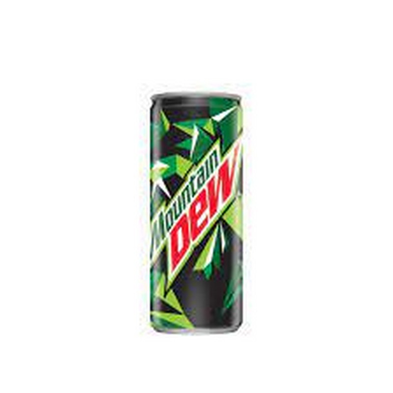

Mountain Dew, stylized as Mtn Dew in some countries, is a carbonated soft drink brand produced and owned by PepsiCo. The original formula was invented in 1940 by Tennessee beverage bottlers Barney and Ally Hartman. A revised formula was created by Bill Bridgforth in 1958.
